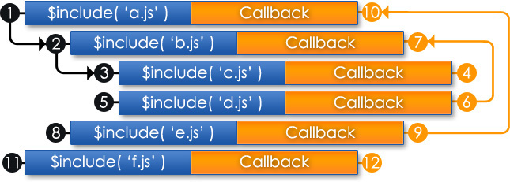

Dynamically including scripts and styles
Web applications often make extensive use of scripts and styles. Some developers choose to combine all scripts into a single file. This can amount to a large file that can slow a website down. Sure the size of the file makes a little different, but what about the parsing requirements within the JavaScript processor. This is especially an issue for mobile devices.
The additional overhead occurs during page load. This means that a page might not be useable until all scripts have finished loading and executing which can be enough to deter even the most patient of users. The situation can be improved by dynamically loading the script(s) as soon as the DOM has finished loading.
Scripts can also be broken into separate modules that:
- are easier to maintain and test
- can be loaded when (and if) they are needed
How do dynamic includes work?
By default a script is only included and processed once. So re-including the same script over and over will do nothing. It is possible to force a script to be re-included. This is useful for scripts that perform a process (as opposed to defined processes with functions and classes).
Callbacks can be used to perform processing once a specific include has been executed. This allows custom functionality that requires the included script to be executed.
Includes are processed in the same order that the are specified. Included scripts may also include scripts which forms an include hierarchy. Nested includes are processed in order to ensure that dependencies are available when needed. The following diagram illustrates the order that includes are processed and when callbacks are invoked.

Load scripts once DOM has loaded
Scripts can be included using $include at startup once the Capri library has been loaded. The following example demonstrates how this can be achieved:
<!DOCTYPE html>
<html>
<head>
<title>Dynamic include example #1</title>
<!-- essential libraries -->
<script src="myapp/js/lib/jquery.min.js"></script>
<script src="myapp/js/lib/jquery.capri.min.js"></script>
<!-- included once page has finished loading -->
<script>
$include('http://example.com/myapp/js/widget.js');
$include('http://example.com/myapp/js/app.js');
</script>
</head>
<body>
<div id="appframe"></div>
</body>
</html>
You will notice that the full URI of each JavaScript must be specified for include. This may be fine for small applications, but this can be a maintenance nightmare if the same scripts are to be used in multiple applications. The base URI of your web application can be registered with the Capri document manager. A tilde can then be used to reference the base URI of you application:
<!DOCTYPE html>
<html>
<head>
<title>Dynamic include example #2</title>
<!-- essential libraries -->
<script src="myapp/js/lib/jquery.min.js"></script>
<script src="myapp/js/lib/jquery.capri.min.js"></script>
<!-- included once page has finished loading -->
<script>
// register base application URI
capri.DocumentManager.setBaseUri('http://example.com/myapp');
// include scripts relative to base URI
$include('~/js/widget.js');
$include('~/js/app.js');
</script>
</head>
<body>
<div id="appframe"></div>
</body>
</html>
jQuery provides a useful function to register logic that must be executed as soon as the DOM loaded. Capri uses this to process its initial includes. Capri provides a similar function $startup that registers startup logic that must be executed as soon as all includes have loaded.
The following example demonstrates how you might initialise an application:
<!DOCTYPE html>
<html>
<head>
<title>Dynamic include example #3</title>
<!-- essential libraries -->
<script src="myapp/js/lib/jquery.min.js"></script>
<script src="myapp/js/lib/jquery.capri.min.js"></script>
<!-- included once page has finished loading -->
<script>
// register base application URI
capri.DocumentManager.setBaseUri('http://example.com/myapp');
// include scripts relative to base URI
$include('~/js/widget.js');
$include('~/js/app.js');
// initialise application
$startup(function() {
var app = myapp.App.getInstance();
app.init();
});
</script>
</head>
<body>
<div id="appframe"></div>
</body>
</html>
Load scripts and styles on demand
The above examples demonstrate how to delay load scripts upon loading page. It is also possible to include scripts and styles on demand. This is achieved in much the same way except the include queue must be processed manually with $include.process.
A callback is used in the following example to update the user profile once the profile script has been included.
$('#save-profile').click(function() {
// ensure that required scripts and styles are included
$include('~/css/profile.css');
$include('~/js/profile.js', function() {
var profile = myapp.Profile.getInstance();
profile.setName($('#profile-name').val());
profile.setEmail($('#profile-email').val());
profile.saveChanges();
});
// process all queued includes
$include.process();
});
Summary
This tutorial has explained how dynamic includes can be used to improve performance and the maintainability of a web application. Scripts can include one another which leads to a heirarchy. Dynamic includes must be manually processed once initial batch of includes have been processed during page load. The $startup function executes callbacks once all initial includes have been loaded and executed.